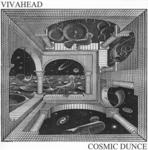

| Artist: | Vivahead |
| Title: | Cosmic Dunce |
| Label: | Pulper Music Productions |
| Length(s): | 55 minutes |
| Year(s) of release: | 2003 |
| Month of review: | [04/2006] |
| 1) | Pulper | 5.52 |
| 2) | Pre-Real | 3.42 |
| 3) | Splinter-Run | 3.03 |
| 4) | Brief Shape | 1.02 |
| 5) | Webble | 0.29 |
| 6) | Dim | 5.14 |
| 7) | Sober Chaser | 4.40 |
| 8) | Stomp Riddler | 4.47 |
| 9) | Only | 1.20 |
| 10) | Allsorts | 1.02 |
| 11) | Home | 15.35 |
| 12) | Proposition | 7.54 |
Pre-Real has sounds that can be quite painful to the ears. There is some Daft Punk like vocals here, but vocoded almost beyond recognition. The pace is high this time. That also holds for the noise rich Splinter-Run. Oh wait, that ain't noise, those are programmed cymbals. In between the band fiddles around with RIOesque vocals and bird squeaks. The second half features percussive piano.
Brief Shape is a relatively short track, but with a rather full organ sound. Hereafter the bird squeaks return in the even shorter Webble. This is plain fooling around. Dim is a very repetitive track in which a drone takes the fore, and occasional bleeps and tweaks build a sinister atmosphere. Sober Chaser on the other hand, is a strongly rhythmic track, with weird vocals, a bit like Kraftwerk playing together with Thinking Plague, but less refined. The track becomes more chaotic in the second half, when the bird noises come back in.
Stomp Riddler has the beat of a rock track, and additonally has plenty of distortion. A monotonous piece of work, that does not appeal. The absence of melody starts to wear me down I guess. Only on the other hand is short, but melodic and repetitive piano tune. Very simple too, but that's okay.
We are back in RIO territory with Allsorts. Again, we have vocals here. We move right into the long track Home, over fifteen minutes in length no less. This song has sparse piano play, very accidental, back by even more accidental rhythm parts, and spooky low sounds in the back. This is what I would call dark ambient, and the band succeeds well in building an atmosphere. But patience is a necessity here. Later the piano's role becomes smaller, in that other alienating sounds take over in volume. There is a certain suite like quality to the music, something giving it an air of modern classical music. This also has to do with the chosen sounds, which reminds oboes, bassoons and the like.
On Proposition, Donald Duck, re-enters the stage. He seems to be laughing at me. Then we are back to the beat, making for a bit of a techno sound. But the song does have melody and even a kind of swing. Again, the song has vocals, but this time they are spoken, and they are a welcome addition, adding urgency to what is already an urgent track. The repetitive melody is really nice. This is how I like Vivahead most.